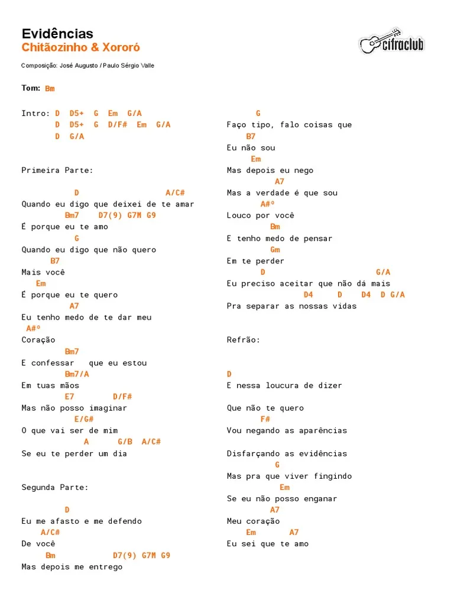

TeleCifras
Cifras
Pesquisar cifra:
Histórico
evidências-Chitãozinho e Xororó
Odeon-Ernesto Nazaré
Prayer X-King Gnu
Ele é meu e teu Senhor-HCC
Tu és Fiel-Eduardo Mano
Mais Acessadas
evidências-Chitãozinho e Xororó
Odeon-Ernesto Nazaré
Prayer X-King Gnu
Ele é meu e teu Senhor-HCC
Tu és Fiel-Eduardo Mano
